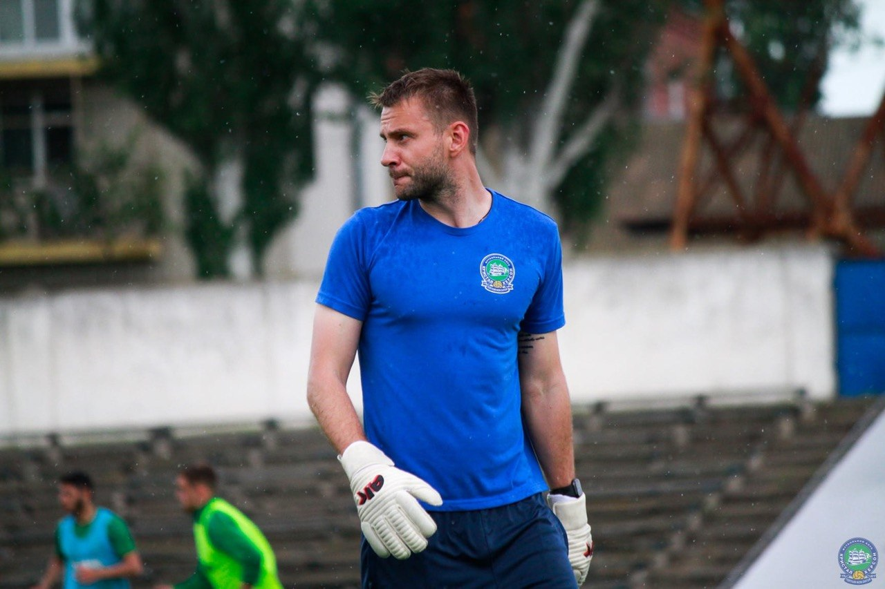
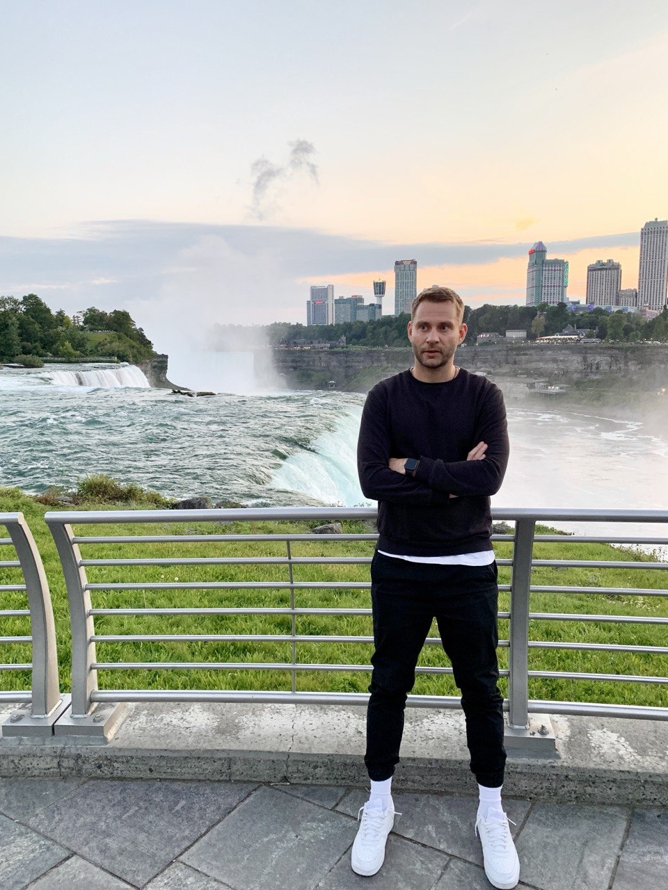

Beyond the Code
When I'm not coding, I love exploring new hobbies and interests that keep me inspired and balanced.

Playing soccer is one of my favorite ways to stay active and social. I love the teamwork and strategy involved in the game.

Exploring new places and cultures is something I truly enjoy. I love the excitement of discovering hidden gems and creating unforgettable memories.